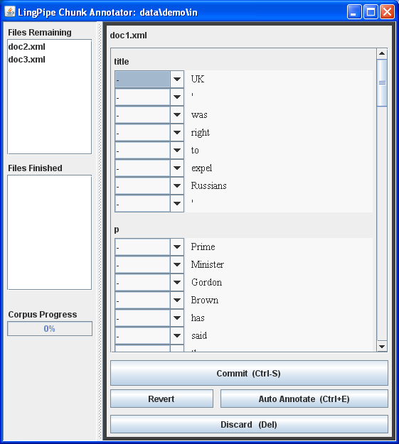
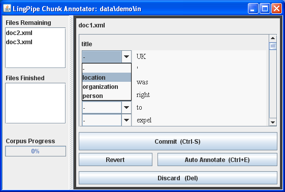
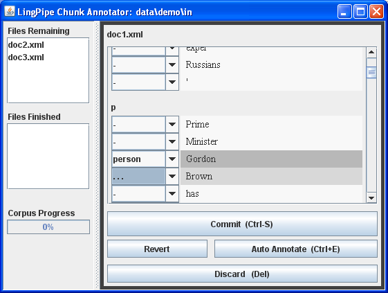
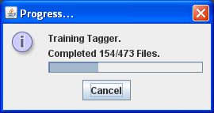

Introduction
In this sandbox tutorial, you will learn how to create a named entity recognizer for a new task from scratch. Specifically, the tutorial covers how to:
- Define a named entity recognition task
- Create a corpus of unlabeled data
- Semi-automaticaly annotate the corpus with named entity tags
- Train and evaluate a named entity recognizer over the resulting corpus
The most important step in the process involves selecting a named entity extraction task that is possible from a practical standpoint. Specifically, the entities and their types must be recognizable from their local context -- the strings that make up the named entity mention and the sequence of characters on either side of the enitity.
Extended Case Study
We're provided an ongoing, more extensive case study of annotating bibliographies in conference papers in:
Document Requirements and Workflow
XML Documents
The annotator assumes documents to annotate are well-formed XML. Attempts to annotate ill-formed XML will result in the file not being openable for editing in the interface. A dialog box will pop up informing you of the file that caused the error and the character set being used. A full stack trace will be output on the console that started the application.
Directory Structure and Workflow
The annotation GUI consumes documents in XML form from a single
directory and produces documents in XML form in a second directory.
The annotator only considers files directly under the specified
directories, so it is best to keep the directories entirely flat.
Files that end in .xml are considered files to annotate.
Whether a file exists in the output directory determines whether or not it is considered fully annotated by the annotation system. If partial annotations are saved in the output directory, it will be up to the user to re-open them and finish annotation.
Several directories may be chained together in this fashion to produce nested annotations or a series of different kinds of annotations.
Character Encodings
Like Java, the annotator runs internally on Unicode character representations, but is configurable for arbitrary character encodings in input and output files.
In the current version of the application, all documents in
the input directory must be encoded with a single character
set. And all output files are produced in a single character
set. These character sets may be different. In the demo,
we have provided Latin1 (ISO-8859-1) input
documents and UTF-8 encoded Unicode (UTF-8)
output.
Recall that arbitrary unicode character content may be represented in an XML document using unicode entities. So the input and output character sets do not constrain the set of characters which may occur in a document's content.
Elements to Annotate
The type of elements within which to annotate must be specified. These elements
must all be tagged chunk, with the value of
attribute type being used to select the elements to
annotate within.
The set of chunk types that may be produced is also provided. In this release, there is no way to have the set of chunks allowed depend on the containing element's type attribute.
Tokenizer
Annotation is constrained to be relative to a tokenization of the input. Specifically, each chunk must start on the first character of a token and each chunk must end on the last character of a token. This is a general requirement inherited from LingPipe's token-based chunkers. Note that the tokens produced by the tokenizer are not explicitly represented in the system output.
The tokenizer will be used for offset annotation and therefore must not remove any characters. Characters may be modified by the tokenizer on a one-for-one basis. For instance, they may all be lowercased or de-accented. The modified view of the tokens is visible in the interface, but the output file will contain the original characters.
The main consideration for choosing a tokenizer is that it be fine-grained enough but not too fine. For instance, a tokenizer that treats each character as a token will allow arbitrary tokenizations, but will not be an efficient notation for annotation, as will become apparent from its layout.
In this tutorial, we will consider an ordinary LingPipe Indo-European tokenizer. In the Citation Annotation Case Study, we consider hierarchical annotation with line-based tokenizer.
Command-Line Invocation
Notice: This demo requires Java 1.6 (download here).
The chunk annotator is a Java program that runs in Java's Swing GUI framework.
Command-Line Arguments
It is configured to run as a command line, and takes the following arguments, in the following order, all required:
com.aliasi.annotate.gui.CorpusAnnotator indir incharset outdir outcharset inChunks outChunks tokenizer font-size auto-annotate
Here is a description of the arguments, with examples taken
from the Ant news-anno demo target.
| Argument | Example | Description |
|---|---|---|
indir |
data/demo/in |
directory for input; must exist |
incharset |
ISO-8859-1 |
charset for input |
outdir |
data/demo/out |
directory for output; must exist |
outcharset |
UTF-8 |
output charset |
inchunks |
title,p |
comma-separated input chunk types |
outchunks |
PERSON,LOCATION,ORGANIZATION |
comma-separated output chunk types |
tokenizer |
com.aliasi.tokenizer.IndoEuropeanTokenizerFactory |
tokenizer class; must have no-arg constructor |
font-size |
12 |
font size in points |
auto-annotate |
true |
flag indicating whether or not to auto-annotate input documents (optional argument) |
Classpath
The annotator requires the following jars on the classpath:
| Jar | Description |
|---|---|
lp-chunk-anno-alpha.0.jar | This project's jar |
lingpipe-3.6.0.jar | LingPipe jar |
jdom-1.0.jar | JDom XML parser/generator jar |
Ant Target
Several examples are provided in the build.xml file.
For instance, the target news-anno is the one we discuss in this
tutorial, and expand in the next section as a command.
Example Command
Putting the pieces together, the demo is invoked with the following
commands, which as usual, only differ in the classpath separator
character. Note that we are assuming here that the interface is
started from the root directory for the citationEntities
project.
Windows
> cd citationEntities > mkdir data\demo\out > java -cp lp-chunk-anno-alpha.0.jar;lib/jdom-1.0.jar;lib/lingpipe-3.6.0.jar com.aliasi.annotate.gui.CorpusAnnotator data/demo/in ISO-8859-1 data/demo/out UTF-8 "title,p" "person,location,organization" "com.aliasi.tokenizer.IndoEuropeanTokenizerFactory" 14
Unix
> cd citationEntities > mkdir data/demo/out > java -cp lp-chunk-anno-alpha.0.jar:lib/jdom-1.0.jar:lib/lingpipe-3.6.0.jar com.aliasi.annotate.gui.CorpusAnnotator data/demo/in ISO-8859-1 data/demo/out UTF-8 "title,p" "person,location,organization" "com.aliasi.tokenizer.IndoEuropeanTokenizerFactory" 14
Running
Notice: This demo requires Java 1.6 (download here).
We've provided a simple example to start with in case you haven't downloaded and processed the running corpus. It involves tagging two text documents.
Starting with Ant
There is an Ant target, demo-anno, which may be used to start
the demo annotation session.
> ant news-demo
The annotator may be started directly from the command-line by invoking Java with a command mirroring the ant target.
GUI Walkthrough
Auto Document Feed
One unusual aspect of the interface worth mentioning is that it is set up to automatically open documents. When the application pops up, it opens a document automatically. Every time the current document is closed, the next document in the queue of documents to annotate is popped up. This saves the user from having to select documents. At any time, users may select their own documents, which simply closes the automatically popped up documents.
Initial Screen Shot
Invoking the demo target will pop up the following GUI window (though much larger, as it defaults to taking up the full screen):
In the rest of this section, we'll walk through the various controls offered by the GUI.
Main Window Controls
The main window is controlled just like any other window in whatever native operating system is hosting Java.
Window Title
The title of the menu lists the directory from which
the source files are generated, in this case, the
relative Windows path data\demo\in.
Minimization, Maximization and Resizing
The standard window controls are available, including minimization and maximization. Minimization typically hides the window offscreen, whereas maximization typically causes the window to fill the entire screen. When the GUI is launched, Java asks the operating system to maximize the window, so it typically starts maximized. It may be unmaximized (which is not the same as being minimized) and resized to whatever size is convenient.
Closing the Application
The only way to close the GUI gracefully is through its
window close control (here a white X on
a red background in the upper right corner). Attempting to
close the window may cause the following dialog to
appear:
This dialog should only appear if there are uncommitted edits.
Clicking OK closes the application, whereas
Cancel cancels the exit operation and thus leaves
the GUI running.
Warning: If you close the application from the operating system by killing the JVM (e.g. by using Ctrl+C in the calling window), data that is being output may be lost. I/O is relatively fast, so this shouldn't be a problem.
Main Window Split Pane
The main application window is divided into two parts. On the left is a representation of the files remaining, files done and overall corpus progress. On the right is the currently active document. The textured gray bar dividing the two halves may be moved back and forth for greatever visibility of one side or the other.
Directory Listings and Progress
The left-hand of the top split pane contains three pieces of information.
Files Remaining
At the top is the listing of files remaining. This is just the names of the files in the input directory that do not have committed versions in the output directory.
Files Finished
Below the files remaining listing is a list of the files which have been finished (by being committed from the editor control, as we describe in the next section). These are files that exist in the output directory with names matching files in the input directory. Any such files are considered fully annotated.
Corpus Progress
The progress bar on the bottom is just the percentage of the total number of files in the finished list. This indicates progress on the corpus as a whole.
Directly Opening a File to Edit
A file in either of the remaining files or finished files lists may be opened by double clicking. This will pull up that file for annotation. This will implicitly close the file that is currently open, which may spawn a warning dialog that any edits in the current file will be lost.
Document Editor
The right-hand side of the GUI window contains the editor control.
Name of File Being Edited
At the top of the editor control is the name of the document currently
being edited. This name is just the name of the file as defined
by java.io.File.getName(); this is just the last
name in the file's path. The file name is the same in both the
input and output directories.
Input Chunk Displays
Each element of the input file that is to be annotated is displayed.
Each such element is displayed with its chunk type at the top, followed
by the editor controls. For
doc1.xml, that's a chunk of type title,
followed by several chunks of type p (for paragraph).
The source of this document may be found in the input directory of the
distribution: data/demo/in/doc1.xml.
Input Scrolls
The scroll bar on the right-hand side of the display will control which slice of the text and associated tag editors are visible. There will only be slider controls if the text of the document being edited does not fit in the available space either vertically or horizontally.
Tag Control and Token Display Columns
Within each chunk to be annotated, there is a two-column display. The right-hand column contains the tokens in the content to be annotated, one token per line. The left-hand column contains pull-down "combo boxes" which may be used to assign tags to a given entity, as described in the next section.
Tagging Controls
The main action in the interface is in the set of tagging
controls, one for each token. Each such control is a pull-down menu
that allows a tag to be assigned to the token to its right. In the
initial configuration, all tags will show the minus sign
(-), which indicates that the token on that row is not
part of a chunk.
The tag control that contains the keyboard/mouse focus will be
highlighted in a bluish gray, as shown on the initial screen
shot above, where the very first token's control is highlighted (token=UK).
Left-clicking on a control brings up its menu, as shown here (sorry, I don't know how to get the cursor in the screen save -- it was just to the right of the location selection):

Moving the mouse up and down will highlight the chosen selection.
Single (left) clicking on the chosen selection will close the menu, which
will now display the item selected. Choose location
and left click on it, and the interface will now display as:
Note how the token itself (UK) is highlighted in a
medium gray. The control is still highlighted in a bluish gray because
the control still has the application focus.
The set of tags that may be assigned to a token depends on its
context. In particular, there are continuation tags represented
as ellipses, that is, three adjacent periods
(...). For instance, scroll down to the first
paragraph, annotate the token Gordon as a person,
then pull down the menu next to the token Brown.
It now shows the ellipsis as an option:
Selecting the ellipsis tag by highlighting it and left clicking produces the following display:

The result is that the two-token phrase Gordon Brown
is now annotated as a person chunk. The first token in a chunk
is labeled with the chunk type and subsequent tokens are labeled
with ellipses. Like the first token in a chunk, subsequent tokens
in a chunk are higlighted, only the subsequent chunks have a lighter
color, so it's possible to tell where the chunks start and end
simply by looking at the token highlighting.
There is no limit to how many tokens may make up a chunk. But chunks being annotated may not cross containing chunk boundaries. That is, the resulting annotation must be purely hierarchical. This is enforced through the GUI by only making legal values available through all controls.
Committing and Related Buttons
Rather than provide a generic "save" button, the interface provides four choices through buttons below the chunks being annotated.
Commit
First and largest is the Commit button.
Pressing this button writes the resulting document to the output file,
with XML chunk elements with appropriate type attributes representing
the text of each chunk. Commit always writes the currently
displayed annotation to the output directory.
Revert
The Revert button may be used to replace whatever
the current state of the annotation is with the on-disk representation.
Whether that is the on-disk representation from the input directory
or output directory will depend on whether the document had already
been committed before being opened. If it had been committed previously,
then the existing annotation from the output directory is redisplayed
when the revert button is pressed. If the document has never been
committed, then the input form is presented. Typically, the input
form will have no chunks annotated, though there is nothing to
prevent starting in the input directory with partially or tentatively
annotated data.
Reversion may pop up a dialog box with a warning that reverting deletes any edits that haven't been committed.
Auto-Annotate Button
The tagger operates by default in a tag-a-little, learn-a-little mode. As documents are annotated, they are used to train a LingPipe chunker built into the GUI. Auto annotation may pop up a warning that any uncommitted edits will be lost.
Whenever a new document is displayed from the input directory automatically (that is, not by pressing the revert button), it is mechanically annotated by the auto-annotator.
The demo is set up to show how auto-annotation works. The first few paragrphs of three different news articles about the same story are included as the first three documents in the demo data.
To make the GUI responsive, auto-annotation happens in a background thread as you edit documents. An unfortunate side-effect of this concurrency is that automatic auto-annotation for GUI popped-up documents is typically a few documents behind the annotation process. Pressing the auto-annotate button will always annotate with the latest trained version of the auto-annotator.
You may see the affect of auto-annotation with the small demo corpus, because the first three documents are roughly about the same topic. If you annotate the first document, then press the auto-annotate button on the second to reannotate it, you will see that entities annotated in the first document are likely to be auto-annotated in the second document. Auto-annotation will get better and better as more and more documents are trained. Initially, you may need to revert documents to remove spurious auto-annotation.
Startup Auto-Annotate Progress Monitor
When many documents have been annotated in the output directory, the GUI may show a progress monitor when it starts up, indicating the progress being made in training the auto-annotator from the underlying data:
Even though we're using LingPipe's most CPU- and memory-intensive
chunker (chunk.CharLmRescoringChunker),
training the annotator should only take a few seconds, but may
take as much as a few minutes in cases where there is a great deal of
text. If the tagger training is canceled, training will have still
visited as many documents as were shown on the progress bar.
Discard Button
The last button, labeled Discard, simply throws away
any current annotations and moves on to the next document. It will
likely put up a warning dialog saying you are about to throw away any
current edits. Discarding a document's edits does not delete the
document, it merely leaves it in whatever state it was in before
editing. Specifically, if it is an uncommitted input file, it will
remain that way. If it is an already committed output file being
edited, discarding current edits leaves it in the output directory as
it was before being opened. The only way to remove a committed file
from the input or output directory altogether is by hand.
Keyboard Shortcuts
There are a number of keyboard shortcuts defined in the interface. Keyboard shortcuts are bound to components and typically only work when certain application focus requirements are met.
The following shortcuts are available no matter what the focus is in the application (with the exception of not working when a modal dialog box is being displayed):
| Globally Active Shortcuts | |
|---|---|
| Shortcut | Action |
| Ctrl+S | Commits current document |
| Ctrl+E | Auto-annotates current document |
| Del | Discards current document |
There are also shortcuts which only work when a particular tag selector (combo box) is focused, and have an effect relative to that combo box.
| Application-Specific Tag Control Shortcuts | |
|---|---|
| Shortcut | Action |
| + | Set next token to continue current token's tag.
|
| = | Equivalent to plus (+) |
| - | Mark current token as no-entity and move to previous token. |
| Backspace | Move to previous token. Does not wrap. |
| Ctrl+L | Roughly centers display on current token. |
| 0 (zero) | Move to start of next entity. Wraps if necessary. |
Note that hitting the minus (-) keyboard shortcut
reverses the action of the plus (+) keyboard shortcut.
There are several controls built into Swing's components, which we have left alone for this interface. The tab key controls focus in Swing:
| Swing's Tab Focus Control | |
|---|---|
| Shortcut | Action |
| Tab | Move to next focusable item, wrapping if necessary.
The order of focus for this application is:
|
There are also built-in Swing keyboard shortcuts for the tag control combo boxes:
| Swing's Tag Control Keyboard Shortcuts | |
|---|---|
| Shortcut | Action |
| Space | Open tag control's popup menu. |
| Up arrow | Open tag control's popup menu, or if open, move to previous tag in popup menu. |
| Down arrow | Open tag control's popup menu, or if open, move to next tag in popup menu. |
| Return | Closes tag control popup menu. |
Note that the tag controls actually override the containing scroll pane's keyboard shortcuts for the up and down arrow. The left arrow and right arrow remain active.
| Swing's Scroll Pane Keyboard Shortcuts | |
|---|---|
| Shortcut | Action |
| Left Arrow | Scroll Right |
| Right Arrow | Scroll Left |
It may sound counter-intuitive, but scrolls work by moving their contents in the opposite direction of the scrolling.
Beyond ASCII
As an example of non-ASCII character set handling, the fourth
document in the demo input directory, data/demo/in/doc4.xml contains several Latin1 characters
outside of the ASCII range (that is, unicode points between 128
and 255 inclusive). The input files are encoded as Latin1,
as indicated in their XML declarations. The output files are
specified to be in UTF-8. Note that when annotating the fourth
document and committing it, the output is generated in UTF-8.
Note that characters in the range 128-255 are encoded using
one byte in Latin1 (matching the unicode code point), but
are encoded with two bytes in UTF-8. All characters are preserved
after this transcoding, as is evident when opening either the
input our output version of the document in a web browser. Either
Firefox or IE will auto-detect the charset from the XML specification,
and you will be able to see its choice by pulling down the
View >> Character Encoding menu
in Firefox or the View >> Encoding menu in IE.
Training with the Annotated Data
The point of creating an annotated corpus is usually to train and/or test an automatic chunker, neither of which are possible without annotated data.
Background Reading: Named Entity Tutorial
The first thing to read is the LingPipe Named Entity Tutorial. This shows how to train and test named entity detectors given an annotated corpus and an appropriate parser.
Corpus Format
The on-disk format for the corpus created by the annotator is in
XML. It uses a general-purpose chunk element, with
an attribute type that determines the type of chunks.
Here is an example document:
<document>
<head>
<chunk type="title"><chunk type="PERSON">John</chunk> and <chunk type="ANIMAL">Spot<chunk></chunk>
</head>
<body>
<chunk type="p">
<chunk type="s">See <chunk type="PERSON">John</chunk>.</chunk>
<chunk type="s">See <chunk type="PERSON">John</chunk> run.</chunk>
</chunk>
<chunk type="p">
<chunk type="s">See <chunk type="ANIMAL">Spot</chunk>.</chunk>
<chunk type="s">See <chunk type="ANIMAL">Spot</chunk> jump.</chunk>
</chunk>
</body>
</document>
Note that there are three levels of nesting with chunk tags in
this document. Paragraphs (p) contain sentences (s)
and sentences contain entities (PERSON, ANIMAL).
Further note that there is document structure above the chunk types of interest.
There is also a chunk of type title (title) which contains named
entity chunks.
The corpus parser only handles a single level of embedding. With the data above, this means we will be able to train entity tags within both sentences and titles, but we will not be able to use the corpus to train sentence chunks within paragraphs. For that, we wold need to strip the underlying chunks out, which is fairly straightforward with XML.
Corpus Parser
We supply a parser for the output file format as part of this
distribution. Its class is
com.aliasi.annotate.corpora.AnnotatorCorpusParser; the
source is in the following file:
We will not step through the source of the parser in this tutorial. Instead, we jump straight to its use, which is just like any other chunk parser. To construct the parser, you will need to provide the set of containing chunk types to the constructor. For a corpus of documents with structure like the one above, the following is required:
Set<String> containingTypeSet = new HashSet<String>();
containingTypeSet.add("title");
containingTypeSet.add("s");
AnnotatorCorpusParser parser
= new AnnotatorCorpusParser(containingTypeSet);
...
This constructs a chunk parser. Note that AnnotatorCorpusParser
extends XMLParser<ChunkHandler>, and thus implements
Parser<ChunkHandler>. This means that the corpus parser
needs a handler of type com.aliasi.corpus.ChunkHandler, such
as any of the chunker trainers.
At this stage, the corpus parser may be used just like any other parser. General instructions may be found in the LingPipe Named Entity Tutorial.
Training the Annotated Demo Corpus
We've provided an Ant target that trains the demo corpus:
> ant news-model
Buildfile: build.xml
compile:
news-model:
[java] Input data directory=data\demo\out
[java] Containing chunk types=[title, p]
[java] Training.
[java] Compiling to file=models\news-demo.CharLmRescoringChunker
BUILD SUCCESSFUL
Total time: 2 seconds
C:\carp\sandbox\citationEntities>
As the output shows, it compiles the model from the demo output
directory, looks for chunks within title and paragraph type chunks,
and compiles the output model, which is of type
com.aliasi.chunk.CharLmRescoringChunker to a newly
created models directory.
Training Code Walkthrough
In this section, we walk through the
code for the class com.aliasi.annotate.corpora.TrainChunker, which is
in the file src/com/aliasi/annotate/corpora/TrainChunker.java. This class provides two static methods
and a main() method for command-line invocation.
Working from the top, we start with the main method:
public static void main(String[] args) throws IOException, SAXException {
File inputDir = new File(args[0]);
File modelFile = new File(args[1]);
Set<String> containingTypes = new HashSet<String>();
for (int i = 2; i < args.length; ++i)
containingTypes.add(args[i]);
CharLmRescoringChunker chunker
= trainChunker(inputDir,containingTypes);
AbstractExternalizable.compileTo(chunker,modelFile);
}
This method creates from the first two command-line arguments, the
input directory from which training files are read and output model
file to which the compiled model is written. The remaining arguments
are added to a set of strings representing the containing types for
tagging. Next, a chunker is created by calling the
trainChunker method. Finally, the trained chunker is
compiled to a file using the compileTo utility method of
com.aliasi.util.AbstractExternalizable.
The real work happens in the chunker training method, which constructs the chunker from its rather daunting set of parameters. This is the chunker that is returned at the end of the method.
public static CharLmRescoringChunker trainChunker(File inputDir,
Set<String> containingTypes)
throws IOException, SAXException {
int numChars = 128;
int hmmNGramSize = 8;
double hmmInterpolation = 8.0;
boolean hmmSmootheTags = false;
int numTaggingsToRescore = 64;
int rescoringNGramSize = 12;
double rescoringInterpolation = 12.0;
TokenizerFactory tokenizerFactory
= IndoEuropeanTokenizerFactory.FACTORY;
HmmCharLmEstimator lmEstimator
= new HmmCharLmEstimator(hmmNGramSize,
numChars,
hmmInterpolation,
hmmSmootheTags);
CharLmRescoringChunker chunkerEstimator
= new CharLmRescoringChunker(tokenizerFactory,
numTaggingsToRescore,
rescoringNGramSize,
numChars,
rescoringInterpolation);
handle(inputDir,containingTypes,chunkerEstimator);
return chunkerEstimator;
}
After construction, the chunker is simply passed to the
static handle method for actually visiting the files.
Here is the code for handle:
public static void handle(File inputDir,
Set<String> containingTypes,
ChunkHandler handler)
throws IOException, SAXException {
Parser<ChunkHandler> parser = new AnnotatorCorpusParser(containingTypes);
parser.setHandler(handler);
File[] files
= inputDir.listFiles(new FileExtensionFilter(".xml",false));
for (File file : files)
parser.parse(file);
}
The visitor first creates a parser from the set of containing types.
Then it sets the parser's handler, which in this case will be the
rescoring chunker passed in from the trainChunker method.
Next, we list all of the files that end with .xml in the
input directory (always watch out for CVS files, backups, etc.); the
false parameters means the list should exclude directories
whose name does not end in .xml. Finally, the list of files
is enumerated and each one is parsed. The final write out happens back
in the main method.
Evaluation
Rather than going over the procedure for evaluating a named entity annotator, we refer the reader to our existing tutorial:
The only thing that is different is the chunk parser.
Starting with Labeled Data
You can start the labeling process with already labeled data. Just put labeled data into the input directory rather than unlabeled data. Then, when the document is opened in the interface, it will already have the annotations in place.
In order to actually see the original annotation, you need to do one of two things. First, you can press the "revert" button on the interface. This will pull up the original version of the file without auto-annotation. Second, you can set a flag on the command line that turns off auto-annotation, so that any existing annotation will be seen without having to revert.
Warning: Labeled must be in the same format as the output data to be recognized.
Starting with labeled data is useful in the following two scenarios.
Labeling with an External Program
It is possible to use another program to provide the initial annotations. This might be useful if a program already exists for annotation. It might also be useful if there is a gazetteer of names; seeding the annotation with these, say recognized by a dictionary chunker, might provide a useful leg up for annotation.
Annotation Vetting
Take the output of one person's hand labeling and use it to start labeling for a second person. The second person will effectively check the work of the first person, with the ability to easily make corrections. If the first person's accuracy is high, this can be much faster than starting from scratch to get two eyes on the same data. The second annotator must be vigilant, though; it's easy to get careless if the data being vetted is mostly correct.
Case Study
Following on from this tutorial is a detailed case study of corpus creation and evaluation. It uses three annotator to annotate three levels of structure (bibligraphy within document, citations within bibliography, fields within citatinos) using multiple tokenizers and data gathered from PDFs.
Check it out at:
Standard Entity Annotation Tasks
The annotation tool may also be used for less dense annotation tasks, such as the common person, location and organization annotation tasks of MUC-7 and MUC-7.
- Ralph Grishman. 1995. MUC-6 Named Entity Task Definition Version 2.0.
- Nancy Chinchor. 1997. MUC-7 Named Entity Task Definition Version 3.5.
Following MUC, the Automatic Content Extraction (ACE) evaluations employed a much richer set of entities, including both common nouns and an ontology of subtypes for entities. The entity tagging manual was 67 pages long in 2005.
- Linguistic Data Consortium. 2005-2006. ACE 2005 Annotation Tasks
It is interesting to consider the data in the context of its evaluation:
- U.S. National Institute of Standards. 2007. ACE08 Evaluation Plan
In the bio-informatics domain, here's a discussion of the GeneTag corpus, created by the U.S. National Center for Biotechnology Information (NCBI), a part of the U.S. National Library of Medicine (NLM), itslef a part of the U.S. National Insitutes of Health (NIH):
- Tanabe, Lorraine, Natalie Xie, Lynne H Thom, Wayne Matten and W. John Wilbur. 2005. GENETAG: a tagged corpus for gene/protein named entityrecognition. BMC Bioinformatics 6(suppl 1):S3.
Feedback
We would love to hear from you about this application. Drop
us a line with comments, suggestions, bugs or any other thoughts
you might have at lingpipe@alias-i.com.